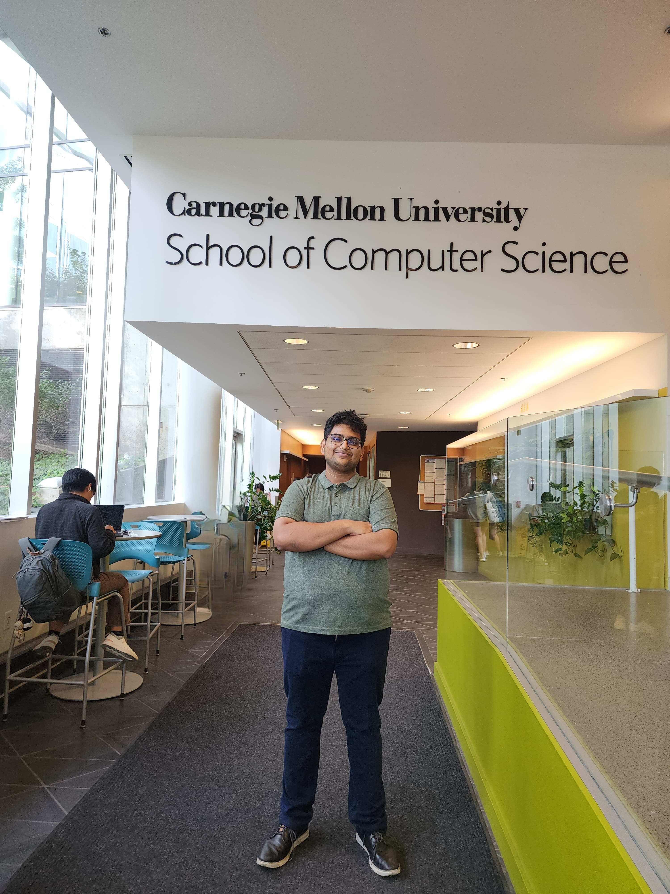

|
Prahaladh Chandrahasan
Hi there! I am Prahaladh Chandrahasan, a graduate student at Carnegie Mellon University . I am pursuing my Master's in Information Technology—Privacy Engineering. Before joining CMU, I worked as a software engineer in Bank of America Continuum India's APAC payments team, where I had the opportunity to file my first patent. I was also a part of RedHat as a software Engineering intern in their middleware team where I was primarily involved in contributing to maintaining the Fuse/Hawtio project . I was also a part of Cloudanix(YC S21) as an SWE intern where I wrote rules to check the adherence of AWS accounts to compliance standards.
I finished my bachelor’s in Information Technology from Manipal Institute of Technology in July 2022. During my undergrad, I had the opportunity to work on research projects under the guidance of Dr. Poornalatha G. on Federated Learning and Dr. Karunakar A. Kotegar on Crowd Scene Analysis. I was also a part of the Advanced Drone research subsystem in AeroMIT, where I acquired skills across diverse engineering disciplines like multirotor dynamics, control
theory, interfacing components with microcontrollers, and a rigorous study of deep
learning, primarily computer vision. Winning competitions was a bonus!
My primary research interests lie in Differential Privacy, Privacy-Preserving Machine Learning, Federated Learning, AI Safety, and governance. I am also open to building autonomous drones and testing software!
Please feel free to reach out through email/Linkedin for a chat on privacy, AI, policy, security, or a combination of all the above.
Email /
CV /
Scholar /
Linkedin /
Github
|

|
News
[Sept,2024] Began my master's in Privacy Engineering from CMU. (Linkedin Post) [Sept,2023] Received the Arpit Jain Best Researcher Scholarship for our FL paper.( Website) [Aug,2023] Filed the my first patent through Bank Of America. (Linkedin Post) [Sept,2022] Joined Bank of America as Software Engineer in their APAC Payments team. [Jul,2022] Published the Paper "Federated Learning for Colorectal Cancer Prediction." ( IEEE Link) [Jan,2022] Published the paper "Motion Pattern-based Crowd Scene Classification Using Histogram of Angular Deviations of Trajectories." (Journal Link) [Jan,2022] Joined RedHat as Software Engineer intern in their middleware engineering division. [Oct,2021] Joined a stealth startup as Federated Learning Engineer intern. [Mar,2021] Joined Cloudanix (YC,21) as a Software Engineer intern. (Cloudanix) [Nov,2020] 2nd Place (National) in BRICS Future Skills Aerial Robotics competition, organised by WorldSkills Russia and the Moscow Regional Coordination Centre. [Jun,2019 - Dec 2020] Won various aeromodelling and Drone racing competitions as a part of AeroMIT. [Jun, 2019] Joined the Advanced Drone Research (now Autonomous Drone Research Subsystem) Subsystem in AeroMIT. (AeroMIT)
|
Research
Publications
[1]Yash Maurya, Prahaladh Chandrahasan, and Poornalatha G, “Federated Learning for Colorectal Cancer Prediction,” 2022 IEEE 3rd Global Conference for Advancement in Technology (GCAT), vol. abs 2110 9910, pp. 1–5, Oct. 2022, doi: https://doi.org/10.1109/gcat55367.2022.9972224. (Link)
[2]A. K. Pai, Prahaladh Chandrahasan, U. Raghavendra, and A. K. Karunakar, “Motion pattern-based crowd scene classification using histogram of angular deviations of trajectories,” The Visual Computer, vol. 39, no. 2, pp. 557–567, Jan. 2022, doi: https://doi.org/10.1007/s00371-021-02356-3. (Link)
Patent
Distributed, Privacy Preserving, Payments Fraud Detection System,
Application No. : 18/239,214 · Filed Aug 29, 2023
|
Blog
Checkout my Medium page to read some of my thoughts on technology and my experiences.
Miscellaneous
I maintain a listof websites I have visited and investigate whether a user can opt out of cookies or targetted advertaising.
|
|
{kind=link}